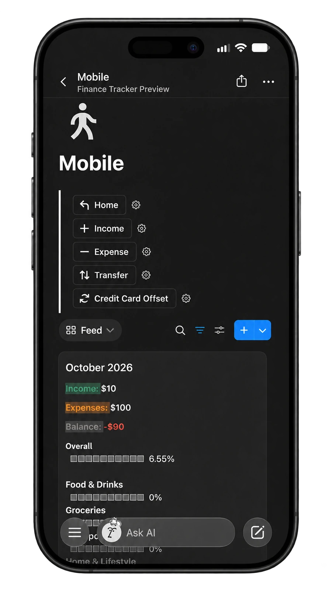
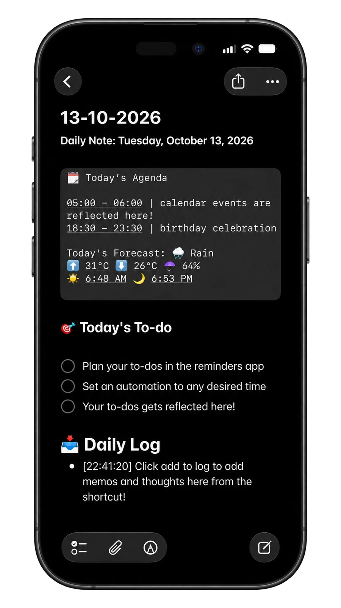
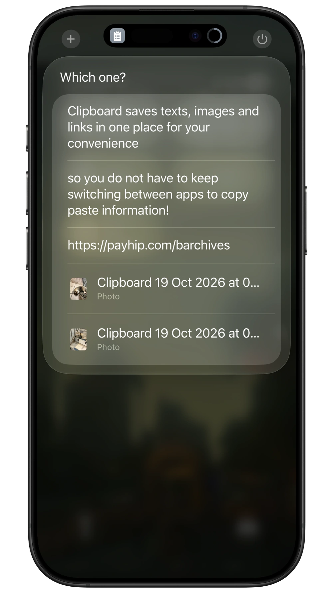
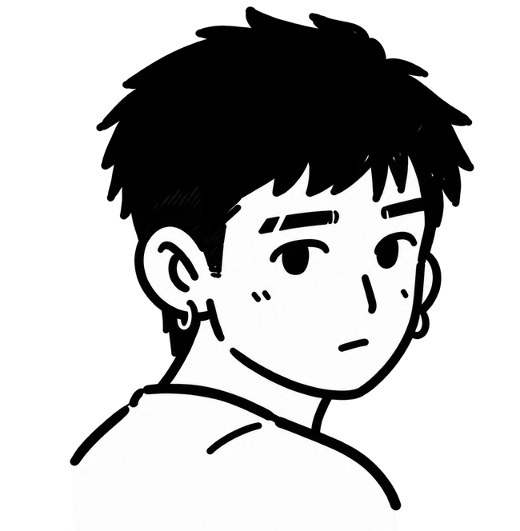

A little less admin.
A little more life.
Thoughtful shortcuts and a Notion tracker for the things you do every day. Small tools, made to fit into real life.
Three little tools.
Room for a better routine.
For the money you spend, the days you journal, and the things you copy along the way.
Finance Tracker
S$15A quicker way to log your spending, with a Notion workspace to see where it all goes.
- Quick transaction logging
- Monthly overview
- CSV export views

Daily Journal
FreeYour weather, schedule, and to-dos, gathered in a daily note. With room for the thoughts in between.
- Daily agenda + weather
- Memos + quick notes
- Two free shortcuts

Clipboard Manager
S$3A small home for the text, links, and images you want to copy now and come back to later.
- Text, links + images
- Retrieve + delete
- No manual setup

Useful first.
Made for real life.
Practical tools with a bit of personality. Built around everyday needs.
01
Made from real routines.
These started with things I wanted to make easier in my own day. A practical need comes first.
02
Small, with a purpose.
Each tool has a focused job. Pick the ones that fit the way you already do things.
03
Clear from the start.
See what a tool does, what it needs, and how to get going before you add it to your routine.

I make small things
that help.
barchives started with tools I wanted to use myself. A quicker way to log spending. A place to collect a day. A way to keep the things I copy.
This is where I share them. If you have a question or something to tell me, I’d like to hear it.
A question before you start? Each product page has its own setup details and answers.
Ask me a question